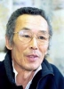

Also known as:Gekitotsu! Satsujin ken (original title)
Country:Japan, 2 minutes
Spoken languages:Japanese
Genres:Action, Crime, Thriller
Director(s):Shigehiro Ozawa
Writer(s):Kôji Takada, Motohiro Torii, Steve Autrey
Video Codec:Unknown
Number: 898


Certification:R
Storyline:
After failing to reach a deal with her enemies, a mercenary karate master decides to protect the daughter of a recently deceased oil tycoon from the evil conglomerate that's after her inheritance.
Cast: 


Medium: Original DVD,
Comments: Part of: Martial Arts Masters
Loaned: No
Aspect ratio: Unknown